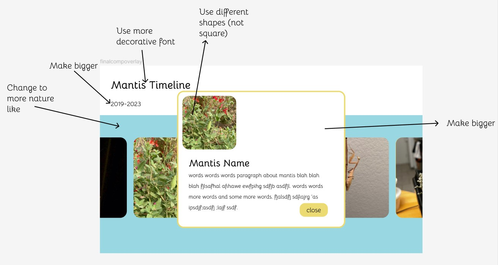

Visual Design Critiques and Report
Morissa Rubin, my DES116 professor citiqued my work. She is a graphic designer and graphic design professor at UC Davis and other colleges. She mentioned that I could have higher contrast between my colors and images to make the page feel more dynamic. She also said adding contrast to the boldness of the header vs body text and adding more color to my body text by highlighting specific words using different colors or different text weights. She said I could add more content such as where each photo was taken or to add some kind of patterning that relates to each photo or mantis. She added that the shape of the image inside the overlay could be different from the shape of the images in the carosuel to add an element of surprise. She liked that the image would change from black and white to color when hovered on.
Rheiana Mirazen Cuevas, the class undergrad design tutor. She was listed as an option for critique and has taken design courses. She recommended I increase the size of the overlay as well as add colors assosciated with nature and my mantids such as brown and green. She recommended that the image change color when hovered over which is an element that I have in my code already so that works. She also added that having a background similar to a mantis habitat consisting of plants and branches and similar things would look nice.
